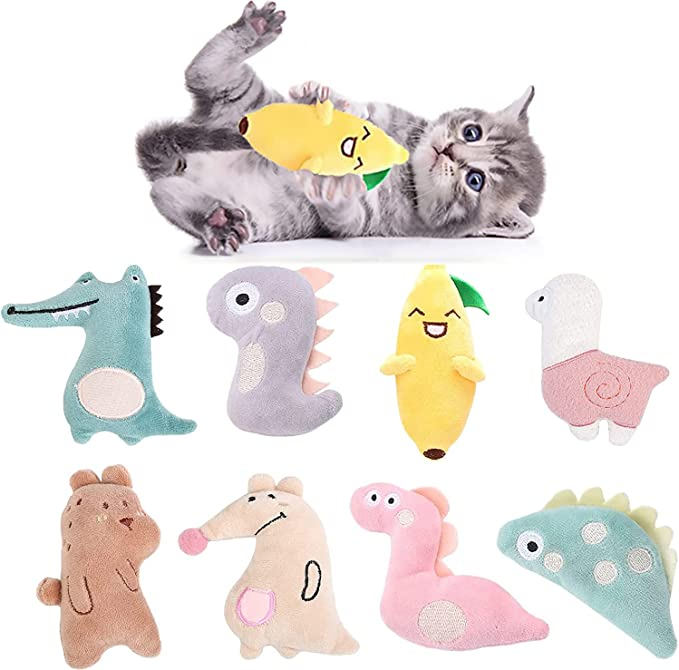
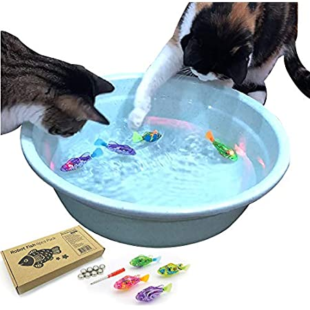
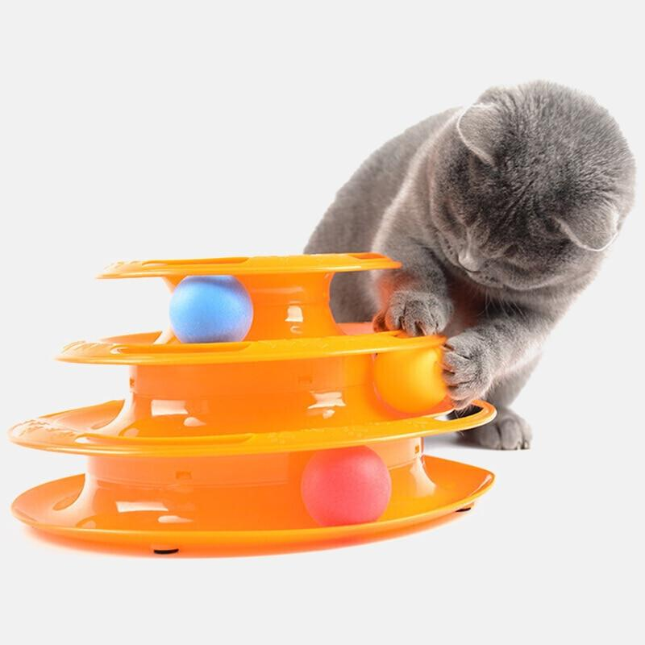
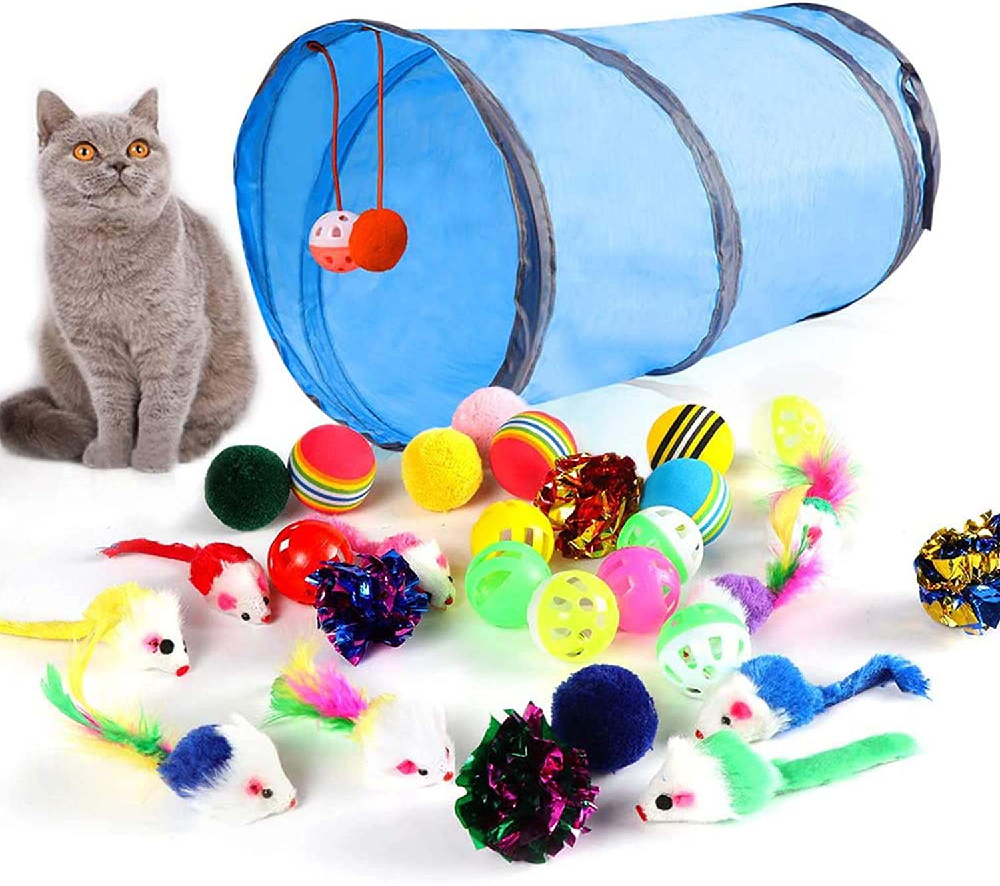

Lucy is very playful but is not easily entertained. One of the first toys I bought her was a flopping fish, which she was NOT a fan of. What she does love is catnip and basically anything that rolls. She also has a secret love for plushies.

I like to put catnip on top of her toys. She goes crazy with the plushies.
*kitten not included.

Since Lucy enjoys basically anything that rolls AND catnip, I knew this would be the perfect toy. The only thing is that this is a pretty solid piece of catnip. If your cat has a tendency of throwing their toys in the air, like mine, be aware. It can damage glass.
*cat not included
 Lucy is entertained by things that move. I loved the idea of her playing with water because she was extremely afraid of baths. This helped her get accustomed to it.
*pool not included.
 This rechargable toy was her favorite for a few months. Now, not so much but there are times where she still plays with this specific toy.
This rechargable toy was her favorite for a few months. Now, not so much but there are times where she still plays with this specific toy.
*cat not included.
 I will randomly hear her playing with this toy. It's perfect because she tends to lose all the balls I buy her but she can't misplace these.
*cat not included.
 I loved this set because it came with so many toys and a little tunnel to play in. She loves that tunnel!
*cat not included.